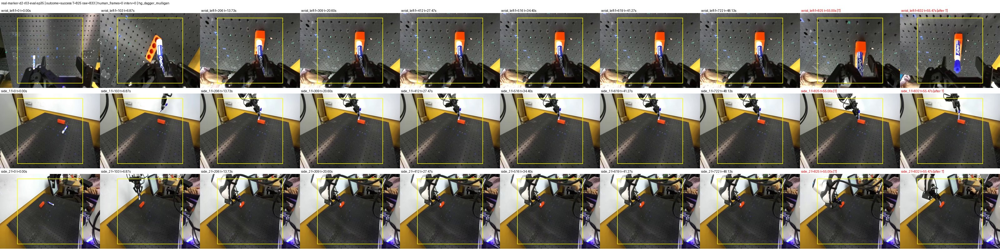
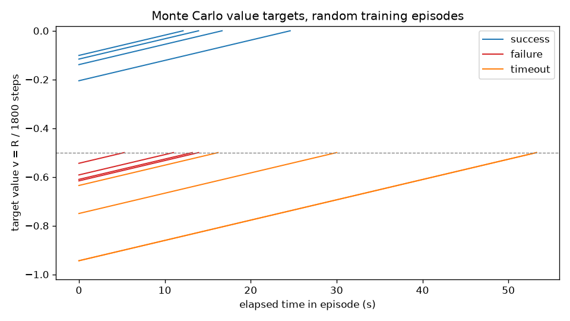
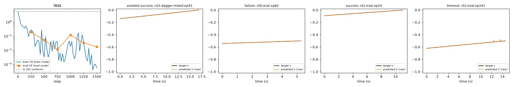
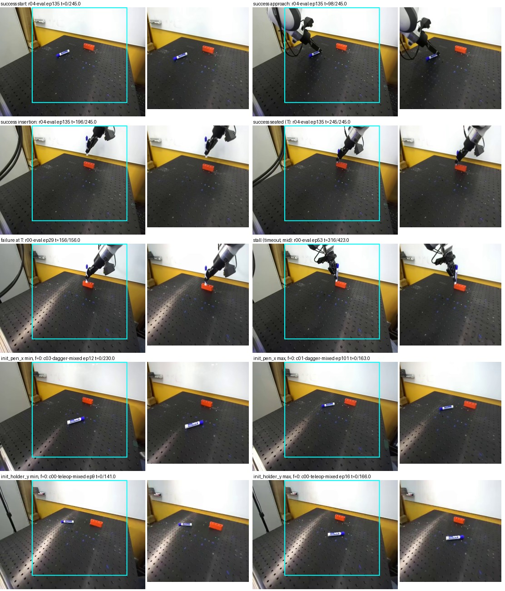
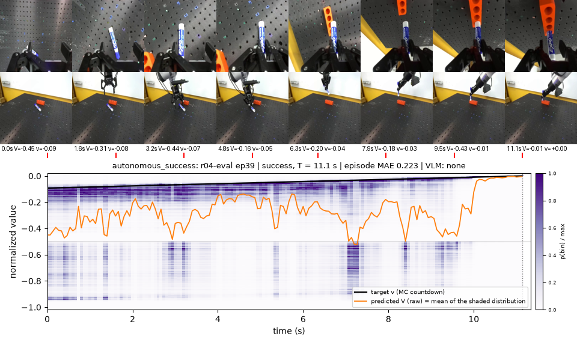
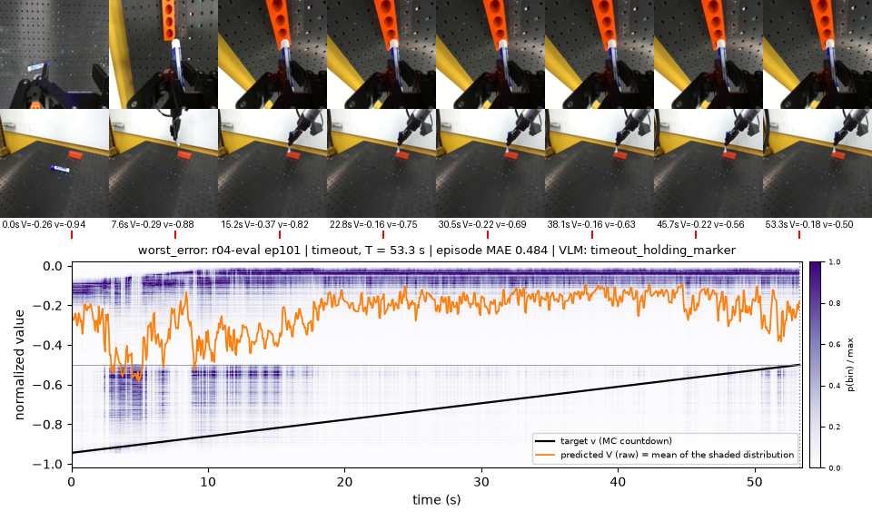

Week 5 · Oct 13 – Oct 19, 2026
Mulligan Insert Marker (real-robot data)
Project start (Oct 17): audited and split the data, built targets and the pipeline, trained a baseline that beats trivial predictors, settled a stable recipe, and found the side camera carries most of the signal.
Glossary: what the metrics mean
| V (value) | The model's estimate, from -1 to 0, of how well the episode is going: near 0 means about to succeed, below -0.5 means headed for failure. |
|---|
| Target | The training label per frame: a straight countdown to the episode end, with an extra penalty if it fails. |
|---|
| Two humps | The model outputs a probability over 201 value bins. These usually form a 'success' bump and a 'failure' bump, and V is their weighted average. |
|---|
| p_succ | Probability mass the model puts on the success side (values above -0.5). |
|---|
| CE (cross-entropy) | The training loss, in nats. Lower is better; a difference of about 0.02-0.03 is the smallest this validation set can detect. |
|---|
| MAE | Average absolute gap between V and the target. Lower is better. |
|---|
| Shape MAE | Error after removing each episode's average level. It measures whether V's ups and downs within an episode are right. A flat line scores 0.037. |
|---|
| AUC | How well a score ranks one group above another: 0.5 is chance, 1.0 is perfect. |
|---|
| Within-round AUC at 1/5/10 s | Inside one robot round, how well V at that time ranks episodes that will succeed above those that won't. |
|---|
| stall_auc | How well p_succ separates success frames from frames where a failing robot has held still at the holder for at least 4 s. |
|---|
| Round / repo | A batch of data collected with one policy version (r00-r04 autonomous evals; c00-c05 teleop or assisted). Rounds differ a lot in success rate. |
|---|
| Round-only constant | A trivial predictor that outputs each round's typical training value. It is the strongest simple baseline. |
|---|
| Stall | A failed episode where the robot holds the marker at the holder without progress until it times out. |
|---|
| Seeds | Repeated training runs with different random starts. Differences smaller than the seed-to-seed spread are noise. |
|---|
| Advantage label | RECAP's 'was this action better than usual' tag, computed from how V changes over the next n seconds. |
|---|
| Early vs late fusion | Combining two frames' pixels before the encoder (early) vs encoding each frame and joining the features (late). |
|---|
| Proprioception | The robot's own state: gripper position, orientation and opening width. |
|---|
| baseline recipe | The baseline recipe: shared ResNet-18, both cameras, LeRobot-style augmentation, 3 seeds. |
|---|
1. Dataset audit: outcomes, endpoints and splits (Oct 17)
settled
Can we trust each episode's success/failure label and its end frame, and split the data so no starting scene leaks between train and validation?
- Every one of the 2,095 episodes with a known outcome has a label and end frame that agree with the per-frame data.
- 4 episodes with no reviewed outcome were dropped instead of being counted as failures.
- Starting scenes never cross splits: train 1,377 / val 247 episodes; the two r05 test sets (150 + 200) stay untouched.
- Timeouts count as failures, as in RECAP (Lars, Oct 17).

real-marker-d2-r03-eval_ep0035.jpg
Source: reports/dataset_audit.md; PROGRESS.md Stage 1
2. Value targets: a straight countdown per episode (Oct 18; timestep form Oct 19)
settled
What number should the model learn for every frame?
- Reward is -1 per frame plus a 900-step penalty for failure, scaled so successes fall in (-0.5, 0] and failures in [-1, -0.5].
- Within an episode the target is a straight line rising to the end. Any drop at a mistake can only show up in the model's predictions.
- Checked on 575,406 frames: no target falls outside the 201 value bins.
- Switching from seconds to timesteps gave identical bins, so no retraining was needed.

target_examples.png
Source: reports/targets_summary.md; PROGRESS.md Stage 2
3. Pipeline sanity checks B and C (Oct 18)
settled
Does each image line up with its label, and can the model memorize a tiny subset (the check that loader, targets, model and loss are wired correctly)?
- 8 of 8 sampled frames matched independently recomputed timestamps and labels (timestamp/label check).
- On 4 episodes / 720 frames the model drove the loss from 5.30 to 0.018 and fit every curve (tiny-subset overfit check).
- This shows the pipeline can learn. It says nothing yet about held-out episodes.

check_c.png

crops_side_1.jpg
Source: PROGRESS.md Stage 3.5, 3.8; reports/data_checks.md
4. First baseline vs trivial baselines (Oct 18)
settled
Does a ResNet-18 value model beat simple guesses, such as 'predict each robot round's typical value'?
- The model beats every trivial baseline, but 'which round is this' alone gets most of the way (MAE 0.140 vs the model's 0.119).
- Rounds have very different success rates (r00 4% up to r04 53%; teleop and assisted 98-100%), so recognising the round already predicts the outcome.
- Within a single round, the model's success ranking improves from near chance at 1 s to 0.80 at 12 s, which is the progress signal we want.
- The first recipe overfit after about 2k steps.
Validation error of V vs trivial predictors (step-2k baseline) (MAE (value units)) · lower is better
Source: reports/baseline_results.md
5. Settled training recipe: lower learning rate, 3 seeds (Oct 18-19)
settled
Can we stop the early overfitting so later comparisons start from a stable baseline?
- A shorter, decaying schedule did not help. A 10x lower learning rate did: validation loss stays flat and never nears the constant predictor.
- Over 3 seeds: val MAE 0.121 ± 0.004. Seed noise sets the bar: later differences under about 2 sd are not evidence.
- Error check: V hedges toward the middle. It does much better than the round constant on successes, worse on failures and timeouts.
Validation loss (best checkpoint) (cross-entropy (nats)) · lower is better
Source: reports/baseline_results.md; PROGRESS.md Stage 4
6. What V does on real episodes: value plots (Oct 18-19)
settled
Does V rise as the task progresses and react when things go well or badly?
- Yes at the end: V jumps toward 0 when the marker seats, and it separates seated from hovering frames perfectly (AUC 1.0).
- Holding the marker at the holder gives V about -0.55 whatever happens next. One frame cannot show how long the robot has been stuck.
- V jitters a lot from frame to frame (about 30x the target slope).
- Karen watched the videos (Oct 19) and found no data or label problems.

01_autonomous_success_r04-eval_ep0039_dist.png

09_worst_error_r04-eval_ep0101_dist.png
Source: reports/baseline_results.md; reports/stage4_analysis_lowlr_8k.md
7. Operator and arm-occlusion checks (Oct 18-19)
settled
Does V react to a person visible in the wrist camera, or to the arm blocking the side camera?
- The operator is visible in about 20% of wrist frames but does not move V: matched difference +0.00 to +0.06, error no worse. No masking needed.
- The arm covering the side camera causes no level shift (matched ΔV about -0.01), though rare sharp drops cluster when the arm leaves the view.
Source: reports/operator_visibility.md; reports/side_occlusion_lowlr_8k.md; PROGRESS.md Stage 4
8. Camera ablation: wrist vs side vs both (Oct 19)
settled
Which camera carries the value signal?
- Keep both cameras. The side view carries most of the signal: side only is close to both cameras.
- Wrist only is much worse and does not even beat the round-only constant (0.140).
- The 'which round' cue is in the side view: side-only V at frame 0 orders the rounds like the baseline; wrist-only orders them the other way round.
Validation error by camera input (3 seeds) (MAE (value units)) · lower is better
Source: reports/stage5_ablations.md §1
Built 2026-11-11 16:55 PT from reports/site/content/ by scripts/build_site.py.